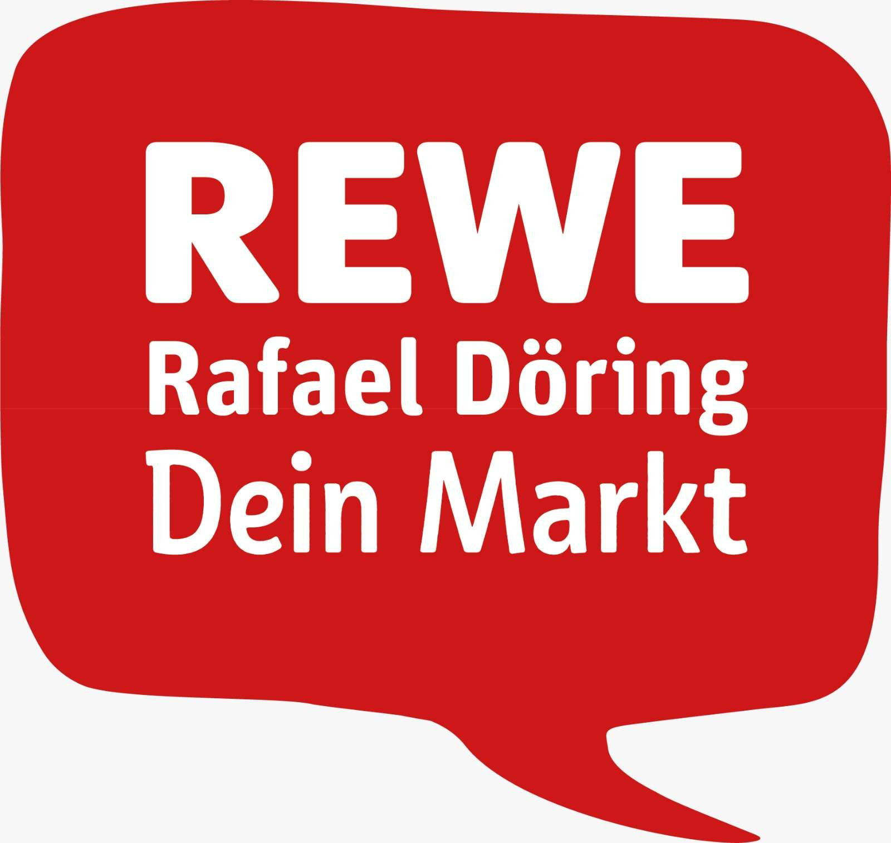

Die NBC Baskets freuen sich sehr, mit REWE Rafael Döring einen starken neuen Partner an ihrer Seite begrüßen zu dürfen.
Rafael Döring ist Inhaber von zwei modernen REWE Märkten in Nordhorn und steht mit seinem Team für Kundennähe, Qualität und regionale Verbundenheit. Genau diese Werte passen hervorragend zu unserem jungen Verein und zu dem Weg, den wir gemeinsam gehen möchten.
Mit der Unterstützung von REWE Rafael Döring gewinnen die NBC Baskets nicht nur einen verlässlichen Partner, sondern auch einen echten Förderer des Sports in unserer Region. Dieses Engagement hilft uns dabei, Basketball in Nordhorn weiter aufzubauen, junge Talente zu fördern und den Verein Schritt für Schritt nach vorne zu bringen.
Besonders schön ist dabei die Verbindung zur Region: Neben der Unterstützung des Sports setzt REWE Rafael Döring auch auf regionale Produkte und lokale Nähe. Als Nordhorner Verein können wir diesen Gedanken nur unterstützen, denn starke Vereine und starke Partner vor Ort machen unsere Region lebendig.
Mehr Informationen zum Markt gibt es direkt auf der REWE Marktseite Friedrich-Ebert-Str. 2 in Nordhorn.
Willkommen im Team
Wir bedanken uns herzlich bei Rafael Döring und seinem Team für das Vertrauen und freuen uns auf eine starke gemeinsame Partnerschaft.